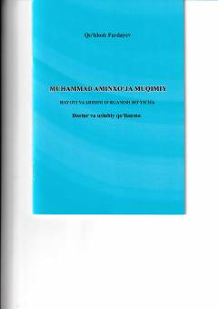

MO'zbek shoiri Muqimiy hayoti va ijodiga bag'ishlangan ilmiy-adabiy tadqiqot.
Ushbu kitob o'zbek mumtoz adabiyotining yirik vakili Muqimiy hayoti va ijodiy faoliyatiga bag'ishlangan. Muallif shoirning hayot yo'li, she'riyatidagi o'ziga xosliklar va uning o'zbek adabiyotidagi o'rnini tahlil qiladi.